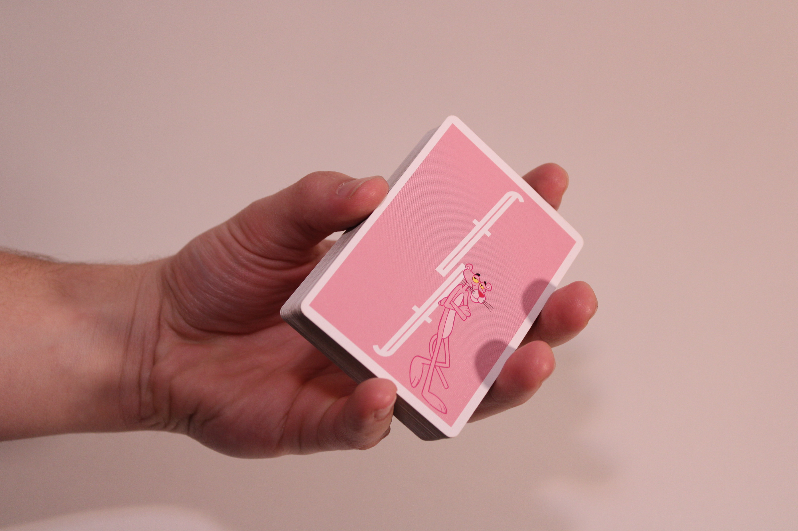
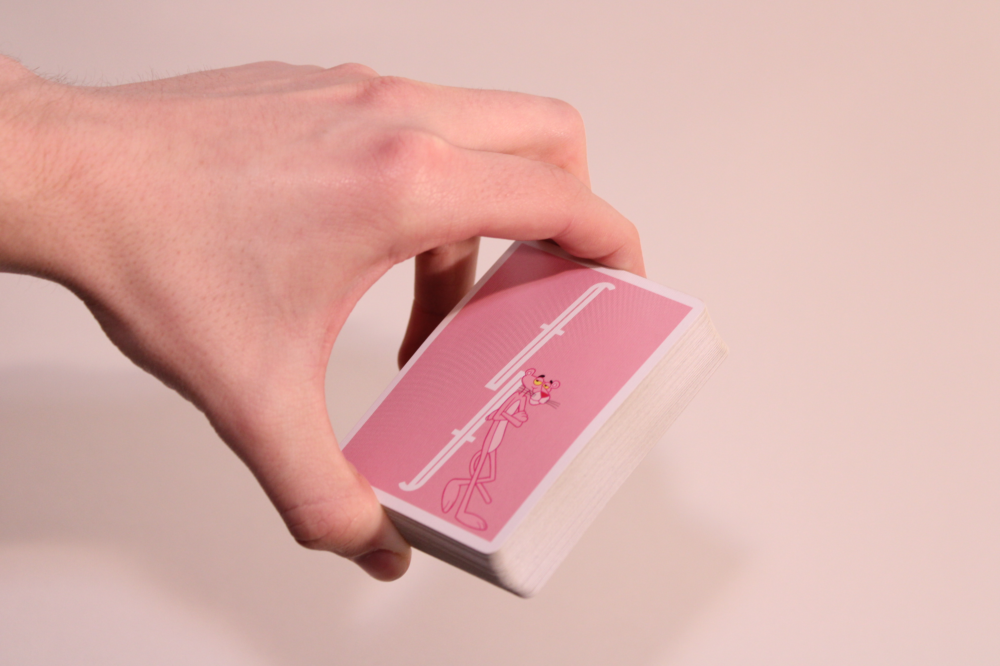
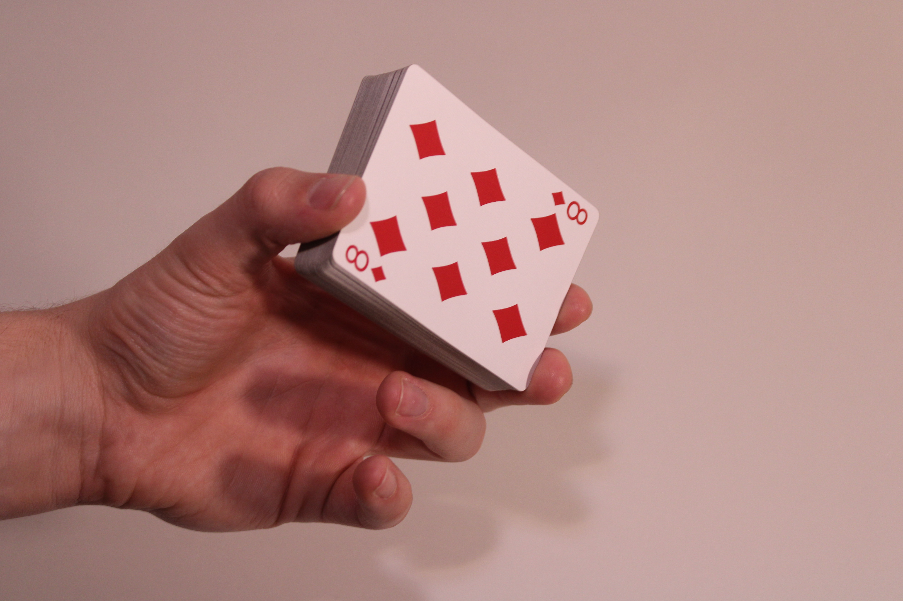
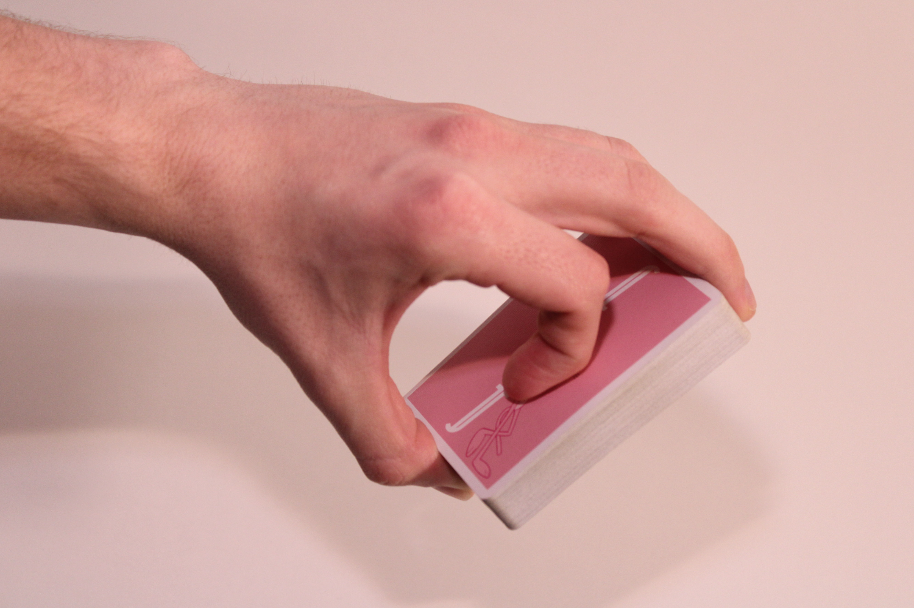
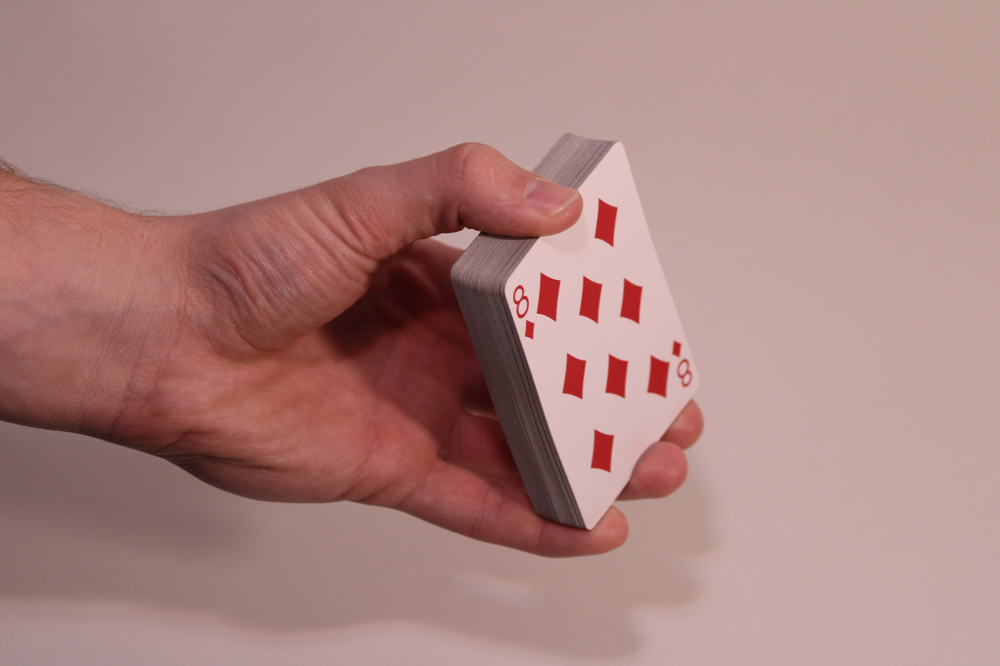
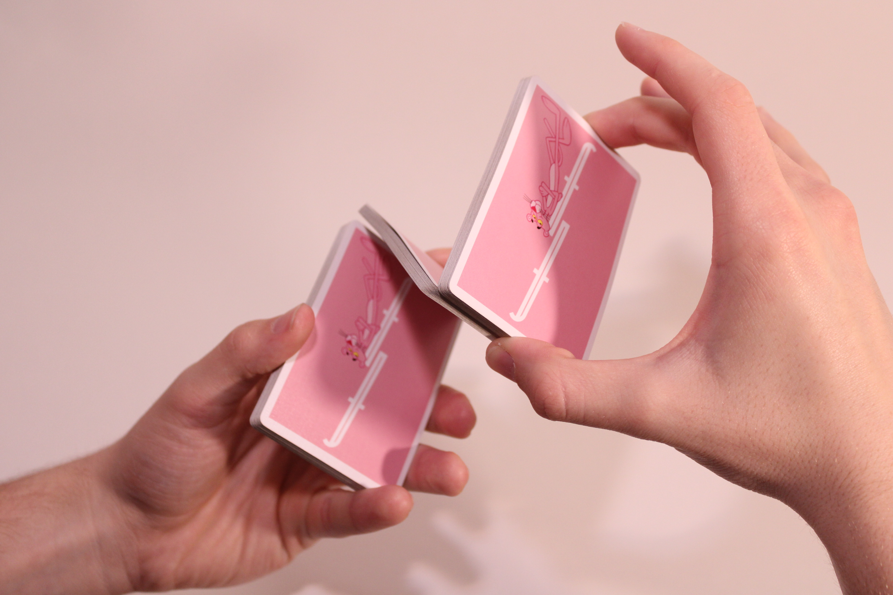

Cardistry grips refer to the various hand positions and techniques used by cardists to manipulate playing cards in visually appealing ways. These grips allow cardists to perform flourishes, cuts, spins, and other intricate movements with cards. Many grips and variations are used in cardistry, each serving different purposes and facilitating different moves and flourishes.
The following page will explore 5 such grips that will provide a strong foundation, allowing you to have a better understanding of most moves that you will learn in the early stages of your cardistry journey.
This is the standard grip used by magicians and cardists alike. The deck is held with your thumb on one long edge, the middle and pinky fingers on the opposite long edge, and the index finger on the remaining short edge.
This grip involves holding the deck between your pinky and index finger along the short sides of the deck, with your thumb on one long side, and your middle and ring fingers on the opposite long side.
In this grip, the deck is held by your thumb on one short side and your index finger and middle finger on the opposite short side.
*Alternate angle*
The End Grip involves placing the thumb on the short side of the deck, with the index finger curled and the middle, ring, and pinky fingers equally spread along the opposite short side of the thumb. This grip can also be performed with the fingers along the long side of the deck, by rotating the deck 90 degrees.
End Grip often involves the use of both hands completing the same grip, however, one hand (usually the non-dominant) holds the deck from the bottom along the long side, while the other (usually dominant) holds the deck from on top, along the short side.
To initiate, begin with the dealer's grip, then use your opposite hand’s thumb and middle finger to separate a third of the deck from the top, ensuring your non-dominant index finger maintains contact with the top of the remaining packet. Utilize your dominant middle finger to separate another third, resulting in the deck being divided into three packets forming a "z" shape.
